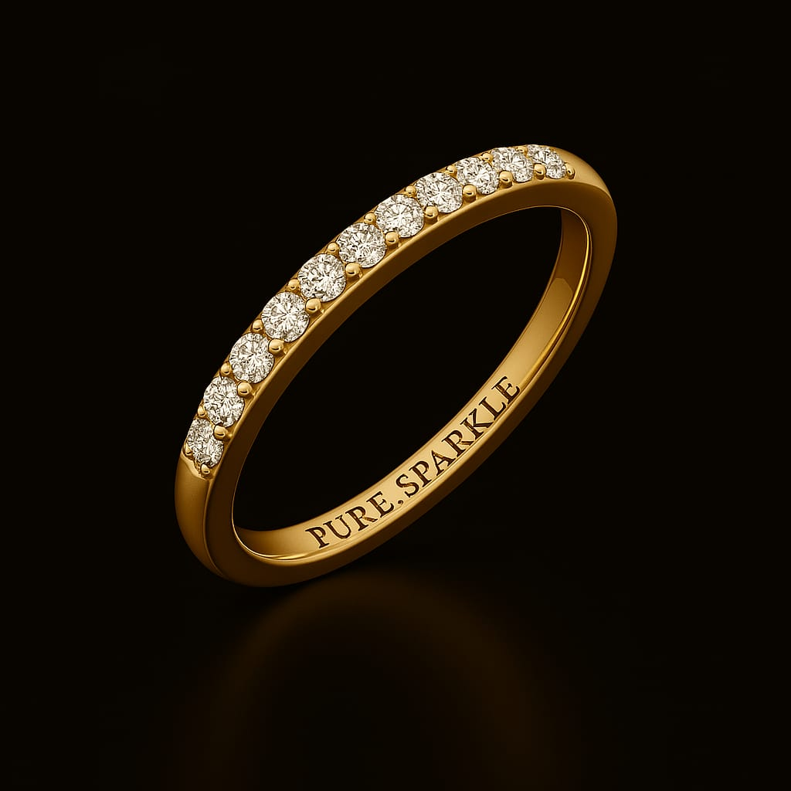
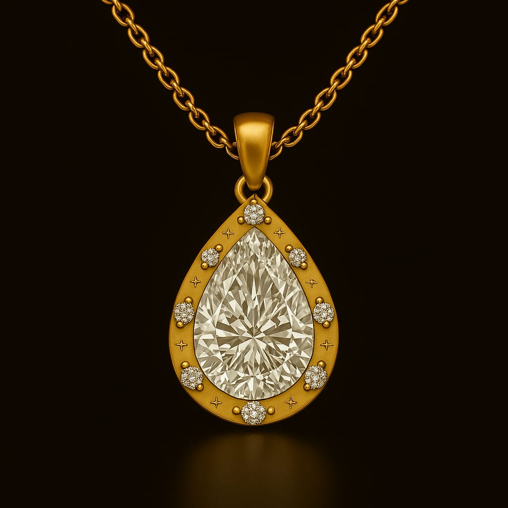
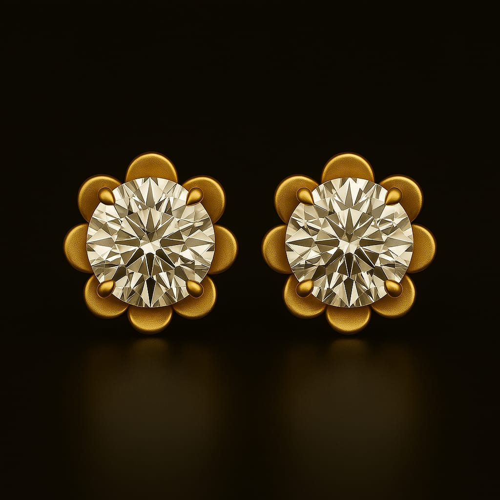

Our Story
At PureSparkle, our journey began with a simple belief — that beauty and responsibility can go hand in hand. Founded by a passionate team dedicated to sustainability, we set out to redefine luxury by offering stunning lab-grown diamond jewelry crafted ethically and with care for the planet.
Every piece tells a story of innovation, transparency, and respect — from the science behind lab-grown diamonds to the artisans who bring our designs to life. We believe that true sparkle comes not just from brilliance, but from values that shine through every facet.
About Us
PureSparkle stands at the intersection of timeless elegance and modern ethics. Our curated collection of lab-grown diamond jewelry offers the highest standards of quality while championing environmental responsibility.
We collaborate with skilled artisans and scientists to create pieces that celebrate beauty without compromise. Our commitment goes beyond jewelry — it’s about empowering conscious choices and supporting a sustainable future.
Products

Celeste Gold Band
A timeless 18K gold band with a lab-grown diamond — elegance, redefined.
₹70,699

Aurora Pendant
A stunning pendant featuring a radiant lab-grown diamond set in 22K gold.
₹48,599

Luna Stud Earrings
Elegant stud earrings crafted with ethically sourced lab diamonds for daily sparkle.
₹83,549
What Our Customers Say
"Absolutely in love with my Aurora Pendant! It's stunning and sustainable." – @theethicalglow
"Elegant and affordable — I get compliments every time I wear my Luna Studs!" – @sparklequeen
"I love knowing my jewelry is ethically sourced. PureSparkle is my go-to." – @kindbling